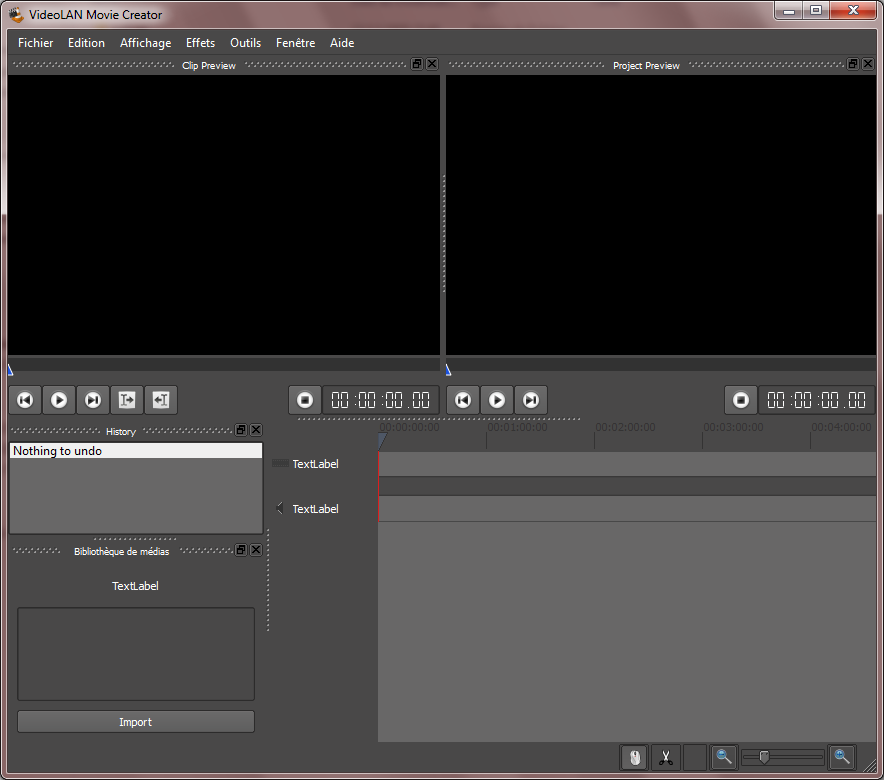

26 décembre 2009
VLMC pour Windows
Pour ceux qui voudraient tester VLMC dont j'ai parlé dans mon post précédent, j'ai fait un torrent d'une version Windows compilée par Geoffroy étudiant à l'école Centrale.
Cette version est assez conséquente (83,5 Mo) car elle inclut notamment des Dlls de développement de Qt nécessaires au fonctionnement du logiciel. (La version publique sera optimisée et ne nécessitera pas ces fichiers)
Attention, cette version n'est pas stable, elle permet juste d'importer des fichiers vidéos, de couper des scènes, de les réorganiser et d'exporter un fichier vidéo (sans son). L'ajout d'effets ou la gestion de son ne sera disponible que dans la première version officielle qui devrait sortir début 2010.


Commentaires 7